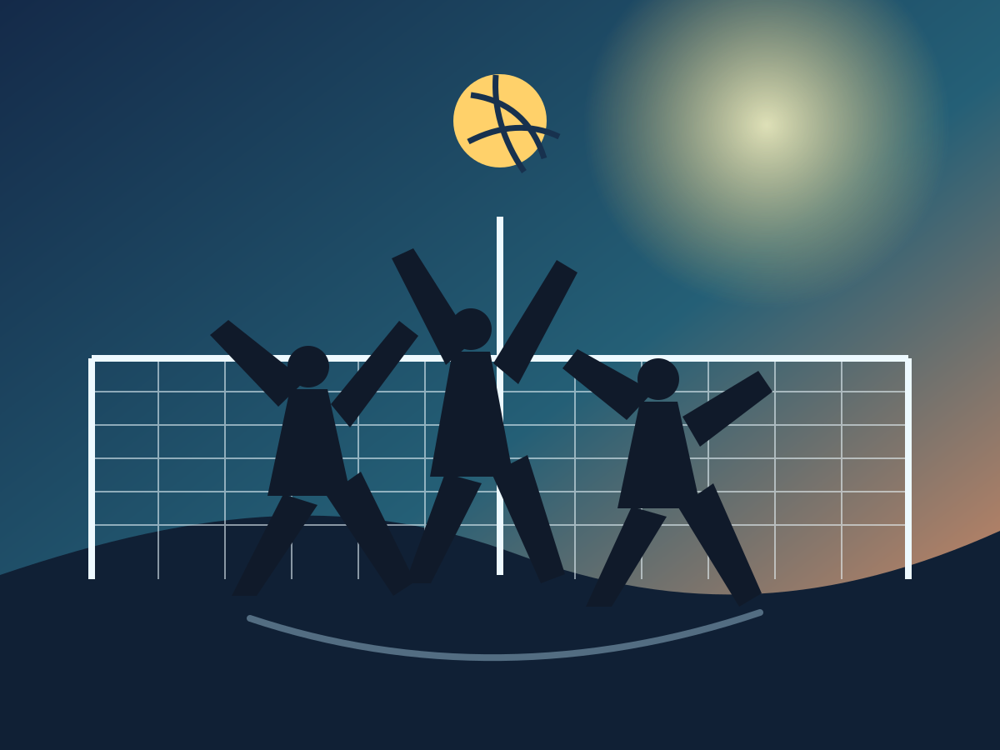
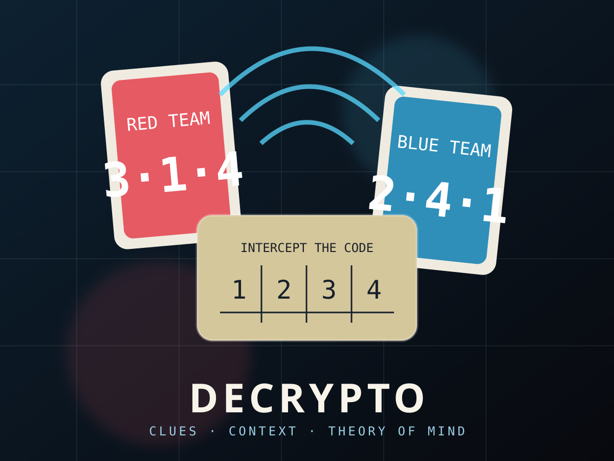

Movement · discipline
Martial arts
Presence, repetition, humility and staying soft enough to respond rather than freeze.
Movement, cinema, books, games, food, compassion and things I make with friends. Not credentials — the experiences that keep showing up in how I care, collaborate and build.
Some of the lessons I use most at work did not arrive through a screen: relax without becoming passive, read the other person, adapt quickly, trust the team and recover after a bad point.
Presence, repetition, humility and staying soft enough to respond rather than freeze.
Read spin, adjust timing, recover immediately and never confuse one point with the whole game.

Trust the call, cover one another and meet the ball at the highest point together.

Precise clues, shared context and the joy of being understood without being obvious.
I do not treat these as authorities or endorse every sentence. They are works and teachers that left a durable question in me — about suffering, presence, action and what a worthwhile life asks of us.

One reason veganism became an ethical responsibility for me rather than a lifestyle preference.
Watch the documentary ↗
Attention, identification with thought and the possibility of fully meeting this moment.

Dharma, action without attachment and how to remain clear in the middle of life.

Mindfulness not as escape, but as a way of touching life and reducing suffering.
“The privilege of a lifetime is to become who you truly are.”
I love films that leave space for what is unsaid. These two hold something personal for me: restraint, longing, creative devotion and the strange beauty of lives that could have gone another way.

Restraint, colour, repetition and everything that remains unsaid.

Ambition, music, creative devotion and the painful beauty of another possible ending.
I like projects where the metric is immediate: does this feel good, does anyone want to play again, does the object make someone curious, does the experience have a pulse?
A personal corner of the internet orbiting Earth: Echo, Pixel the Cat, games, gardens, portals and experiments in meaningful play.
Enter the world →A formation tactics game with cats, relics, combat decisions and a world improved through repeated playtests with friends.
Source stays privateCompassion translated into practical food, staples, product experiments and things people might actually want to eat.
Open Plant Table →Taste, identity, made-to-order creation and whether a digital concept can become something someone wants to own.
Explore the project ↗Some ideas are too important to leave as opinions. I like turning them into small interfaces and experiments people can inspect, challenge and improve.
Experiments around public systems, wellbeing and how technology can reduce friction without losing the person inside the process.
Explore the lab ↗ Evidence-based reformPolicy packages, citizen personas and political simulations for a fairer, healthier and more capable Germany.
Open FairEint → Peace educationAn open educational platform about conflict, root causes, historical lessons and possible paths toward peace.
Explore the platform →Useful is not the only thing that matters.
So do presence, compassion, beauty, friendship, good food, movement and play. I want the systems I build to create more room for those things — not optimise them away.
This page stays curated on purpose. My broader film history, ratings and changing taste already have a better home.